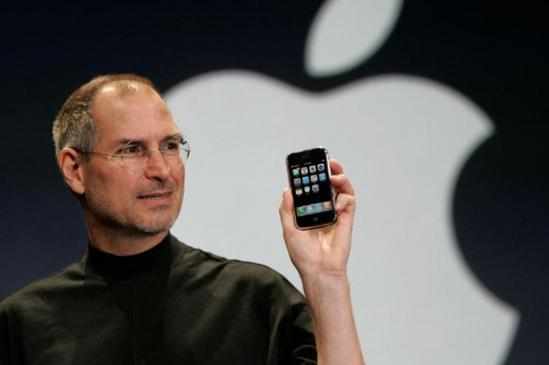
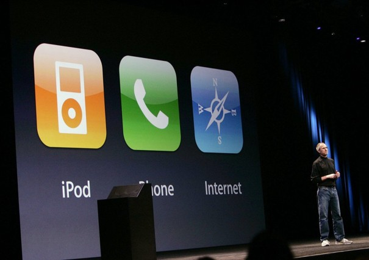
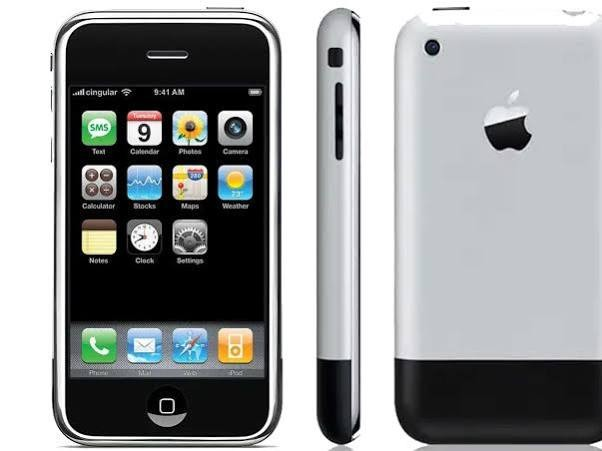

En bemerkelsesverdig oppdagelse fra det amerikanske firmaet Apple vekker nå internasjonal interesse. Dette produktet har potensialet for å kunne åpne døren for en helt ny måte å bruke teknologi på. kan dette være starten på en ny æra for moderne teknologi.
EN OPPDAGELSE SOM ENDRER ALT
I flere år har mennesker brukt forskjellige teknologier for seg selv som iPod, mobiltelefoner og internett på datamaskin, men nå har Apple kommet ut med et helt nytt produkt som samler egenskapene til disse enhetene og setter de sammen i en som kalles I Phone.
Det som gjør selve enheten spesiell er egenskapene for å kunne høre på musikk, surfe på internettet, og navigere gjennom telefonen med en berøringsfølsom skjerm. Dette utfordrer også hvordan mennesker tidligere har sett for seg og brukt teknologi.
SLIK BE TEKNOLOGIEN UTVIKLET

Utviklingen til iPhonen bygges på teknologi som allerede har eksistert, som digitale musikkspillere og touch-skjermer. Disse touch-skjermene er ikke noe nytt, men apple har heller utvikler sin egen Multitouch teknologi. Dette gjorde det enklere å registrere flere berøringer samtidig. Brukeren kan derfor utføre handlinger direkte via fingerbevegelser, i stedet for fysiske knapper.
Gjennom testing av programvaren, maskinvaren og brukergrensesnitt til enheten har iPhone utviklet en enhet som kombinerer flere funksjoner i et kompaktformat.
TEKNOLOGIVERDENEN REAGERER
Lanseringen av produktet kan få betydning for hele markedet for bærbar elektronikk. Tidligere har andre produktet som musikkspillere vært laget for å kunne lagre og spille musikk. Nå har Apple bevegd seg og utviklet et produkt som kombinerer flere digitale funksjoner som folket er fornøyd over.
Apple-sjef Steve Jobs beskriver selv iPhonen under lanseringen, «These are not 3 sepparate devices, this one device, and we are calling it iPhone, Apple is going to reinvent the phone».
«iPhone is a revolutionary and magical product that is literally five years ahead of any other mobile» sier Steve Jobs. Dette viser de store forventningene Apple hart til produktet. iPhonen ifølge Steve Jobs ligger langt foran konkurrentene deres, men nå er det bare vente å se om iPhonen klarer å leve opp til forventingene.
KAN DETTE FØRE TIL ET PARADIGMESKIFTE
Den nye iPhone kan representere en viktig endring i hvordan mennesker tar i bruk elektroniske enheter.
Tidligere var mange digitale enheter vært avhengige av fysiske knapper og en begrensende funksjon. Med nye funksjonen Muli-Touch så introduseres en annet måte å navigere og kontrollere teknologien på.
Noe vi må tenke på er om iPhone kan endre måten mennesker samhandler med teknologi på. Hvis det er sånn at touch-skjermen skal erstatte de tidligere tastaturene og knapper på flere enheter, så kan dette vise en større endring enn kun lansering av iPhonen. De fleste funksjonene er ikke noe helt ukjent heller som kamera, internett og musikk for eksempel.
Dersom denne type brukergrensesnitt blir tatt i bruk av flere teknologiselskaper, kan det utfordre dagens etablerte løsninger.
Likevel er det for tidig for å vurdere og iPhonen kommer til å føre til et paradigmeskifte. Det framstår nå å se om denne teknologien blir til en standard i framtidens elektronikk bruk, eller om den vil være først og fremst være en videreutvikling av løsninger vi allerede kjenner til.
Et paradigmeskifte krever mer enn at en ny mobil lanseres. Det som er avgjørende er om iPhonen kan påvirke resten av bransjen og hvordan de utvikler produktene sine og blant annet få folket til å forvente endringer som dette i framtiden. Dette fører til en større endring og hvis det skjer så kan vi snakke om et mulig paradigmeskifte.
HVORDAN KAN DETTE FORANDRE SAMFUNNET

Denne nye teknologien kan få konsekvenser med blant annet musikkbransjen.
Det å sette sammen 3 enheter i en gjør at det blir enklere å kombinere underholdning, informasjon og kommunikasjon.
Det kan oppstå en del konkurrenter som baserer sitt nye produkt på iPhonen, produsenter kan utvikle lignende løsninger eller noe helt nytt for å holde tempo med utviklingen.
Et spørsmål vi må selv spørre er da, har folket egentlig bruk for så mange funksjoner i en enhet, og kommer dette til å påvirke avhengigheten av teknologi i hverdagen vår?
Fakta om iPhonen
| Presentert | 09.januar.2007 |
| Produsent | Apple |
| Skjerm | 3,5 tommer |
| Lagringskapasitet | 4GB / 8GB |
| Kamera | 2 megapiksler |
| Hoved Funksjoner | nettleser, internett via Edge og Wifi, Google MAPs, musikkspiller |
EN NY TEKNOLOGISK TIDSALDER
Lanseringen av iPhone kan være begynnelsen på en ny vei i moderne teknologi. Apple viser med iPhone hvordan framtidens mobiltelefoner kan utvikles. Likevel er det bare å vente å se om denne nye teknologien kan føre til et teknologisk paradigme skifte, eller om det heller er en videre utvikling dagens løsning.
IKKE ALLE ER IMPONERT
Microsoft sjef, Steve Ballmer var meget kritisk til iPhone under et intervju med CNBC.
« right now we are selling millions and millions and millions of phones a year. Apple is selling zero phones a year.», sa Ballmer under intervjuet.
Han kritiserte den høye prisen (500 dollar) og mangelen på et fysisk tastatur. Han mente at Apple kommer til å ha en stor utfordring dersom de skal konkurrere med andre mobilprodusenter.
Uenighetene som Steve Jobs og Steve Ballmer har, viser forskjellige sidene om hvordan ny teknologi kan vurderes. Steve Jobs har store forventninger og ser muligheter så stiller fortsatt Steve Ballmer spørsmål om iPhonen kan konkurrere med dagens teknologi.
Referanser
- allaboutstevejobs. (2007, januar 9). allaboutstevejobs.com. Hentet fra Macworld 2007: https://allaboutstevejobs.com/videos/keynotes/macworld_2007
- Apple. (2007, januar 9). apple.com. Hentet fra newsroom: https://www.apple.com/no/newsroom/2007/01/09Apple-Reinvents-the-Phone-with-iPhone/
- Apple. (2026). apple.com. Hentet fra newsroom: https://www.apple.com/newsroom/2007/01/09Apple-Reinvents-the-Phone-with-iPhone/
- BuisnessInsider. (2007, januar). businessinsider.com. Hentet fra FLASHBACK: Steve Ballmer's First Take On The iPhone: https://www.businessinsider.com/flashback-steve-ballmers-first-take-on-the-iphone-september-22-2007-2010-6
- Facebook. (2026, januar 9). facebook.com. Hentet fra TheBoardroom: https://www.facebook.com/TheBoardroom/videos/%EF%B8%8F-on-this-day-in-2007-steve-jobs-unveils-the-very-first-iphone-an-ipod-a-phone-a/1799743724059091/
- MacWorld. (2007, januar 9). macworld.com. Hentet fra article: https://www.macworld.com/article/183052/liveupdate-15.html
- networkworld. (2007, januar 9). networkworld.com. Hentet fra article: https://www.networkworld.com/article/837470/lan-wan-macworld-jobs-introduces-iphone-appletv.html
- New york post. (2023, januar 9). https://nypost.com/. Hentet fra Us news: https://nypost.com/2023/01/09/on-this-day-in-history-jan-9-2007-steve-jobs-introduces-apple-iphone-at-macworld-in-san-francisco/
- Open AI. (2026, november 9). ChatGPT.
- smugmacgeek (Regissør). (2007). Ballmer laughs at iPhone [Film].